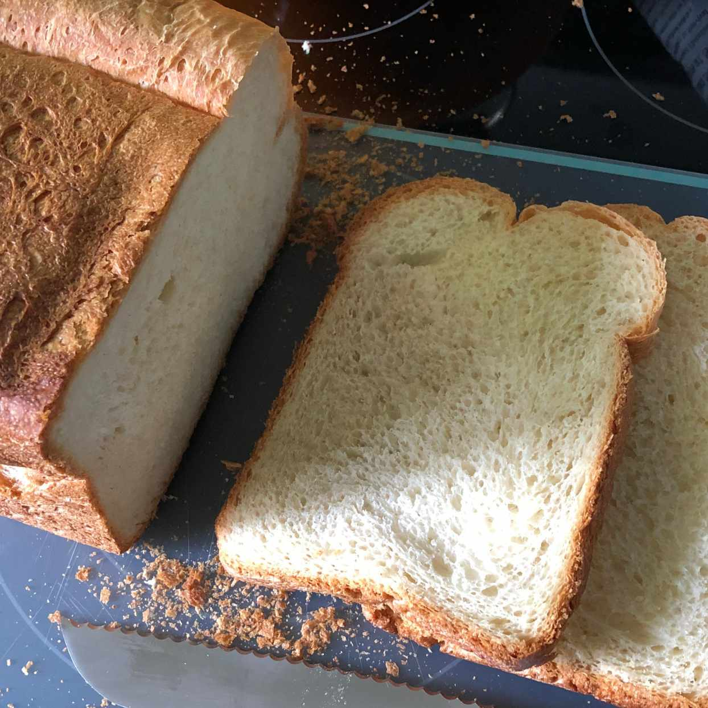

Bread

This is Bread
hmmmm bread!
- Yeast
- Sugar
- Bread Flour
- Oil
- Salt
Steps
- Activate the yeast in the pan of the bread machine.
- Add the remaining ingredients.
- Select the Basic or White Bread setting, then press Start.
- Cool in the pan for five minutes after the cycle is done, then cool on a rack.